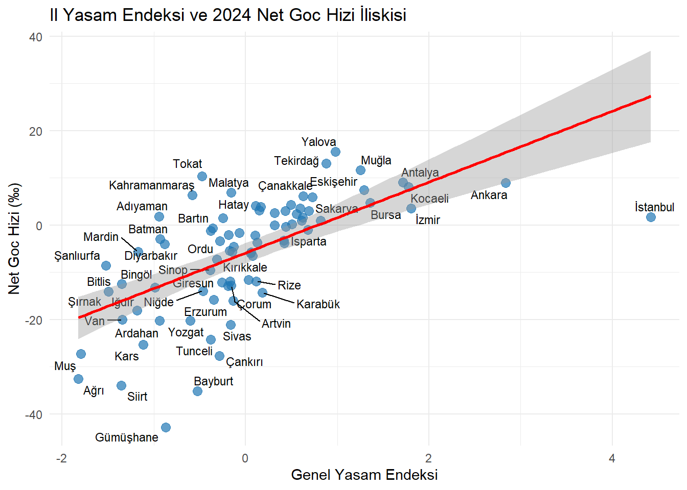

Migration is not merely the geographical displacement of individuals; it is also a reflection of economic pursuits, social opportunities, and structural quality in a region. In Turkey, the difference in development and living standards between provinces constitutes one of the primary dynamics of internal migration movements.
In this project, using TUIK (Turkish Statistical Institute) data, we aim to examine the multidimensional relationship between Net Migration (Net Migration = Migrant Receiving - Migrant Giving) figures for all 81 provinces of Turkiye and the Livability Index indicators in these provinces using analytical methods. Our goal is to reveal, through data analytics and statistical models, which vital factors (economy, education, health, environmental quality, security, etc.) cause people to leave their current cities or move to specific cities.
Creating Migration Profiles: To identify the “Net Migration Champions” (provinces receiving the most net migrants) and “Migration Sources” (provinces giving the most net migrants) in Turkiye and to map them geographically.
The Impact of Livability Dimensions: To statistically demonstrate which of the sub-components of the livability index (Income and Wealth, Health, Education, Environment, Security, etc.) are more dominant “push” or “pull” forces influencing migration decisions.
Our dataset tracks migration metrics across all 81 provinces of TC<rkiye from 2018 to 2024. It combines raw inbound/outbound migration figures with detailed columns explaining 12 different reasons for migration, cross-references them with the Turkish Statistical Institute’s (TC D0K) comprehensive Life Index scores, and shows the relationships between them.
2.3 Reason of Choice
We chose this data because migration cannot be explained solely by economic factors. By combining net migration metrics with the multidimensional Life Index (which assesses health, education, security, and environment), we can reveal the relationship between internal migration in TC<rkiye and life indices.
2.4 Preprocessing
The net migration values are calculated using migration data received and given by provinces in different Excel spreadsheets and the char formatted values containing spaces in the data were updated to numeric values.
Code
#install.packages("ggplot2") #install.packages("dplyr") #install.packages("openxlsx")#install.packages("readxl")# 1. R'ın geçici işlemler için C diskinin altında temiz bir klasör kullanmasını sağlıyoruzwrite("TMPDIR = C:\\", file =file.path(Sys.getenv("HOME"), ".Renviron"), append =TRUE)# 2. Şimdi paketi tekrar yüklemeyi dene#install.packages("writexl")#install.packages("ggrepel")library(ggplot2)library(dplyr)library(readxl) library(writexl) library(stringr)library(forcats)library(tidyr)library(openxlsx)library(ggplot2)library(readxl)library(dplyr)library(ggrepel)
2.4.1. Calculating net migration values and creating a separate Excel file and checking and correcting numerical values.
# A tibble: 7 × 15
`Yıl\r\nYear` `İl\r\nProvince` `Toplam\r\nTotal` Tayin / iş değişikliği\r\nA…¹
<dbl> <chr> <dbl> <dbl>
1 2024 Ankara 150373 18554
2 2023 Ankara 208740 21809
3 2022 Ankara 161912 18930
4 2021 Ankara 165604 19685
5 2020 Ankara 141165 19852
6 2019 Ankara 154464 18398
7 2018 Ankara 221747 24631
# ℹ abbreviated name:
# ¹`Tayin / iş değişikliği\r\nAssignation /\r\n change of job`
# ℹ 11 more variables:
# `İşe başlamak /\r\n iş bulmak\r\nStarting / finding a job` <dbl>,
# `Eğitim\r\nEducation` <dbl>,
# `Medeni durum değişikliği / ailevi nedenler\r\nChange of marital status / family\r\nrelated reasons` <dbl>,
# `Daha iyi konut ve yaşam koşulları\r\n Better housing and living conditions` <dbl>, …
Code
head(grafik_verisi)
# A tibble: 6 × 15
`Yıl\r\nYear` `İl\r\nProvince` `Toplam\r\nTotal` Tayin / iş değişikliği\r\nA…¹
<dbl> <chr> <dbl> <dbl>
1 2024 Ankara 150373 18554
2 2023 Ankara 208740 21809
3 2022 Ankara 161912 18930
4 2021 Ankara 165604 19685
5 2020 Ankara 141165 19852
6 2019 Ankara 154464 18398
# ℹ abbreviated name:
# ¹`Tayin / iş değişikliği\r\nAssignation /\r\n change of job`
# ℹ 11 more variables:
# `İşe başlamak /\r\n iş bulmak\r\nStarting / finding a job` <dbl>,
# `Eğitim\r\nEducation` <dbl>,
# `Medeni durum değişikliği / ailevi nedenler\r\nChange of marital status / family\r\nrelated reasons` <dbl>,
# `Daha iyi konut ve yaşam koşulları\r\n Better housing and living conditions` <dbl>, …
Code
yil <-factor(grafik_verisi[[1]], levels =sort(unique(grafik_verisi[[1]]), decreasing =TRUE))goc_miktari <-as.numeric(grafik_verisi[[3]])/1000ggplot(data = grafik_verisi, aes(x = yil, y = goc_miktari)) +geom_col(fill ="steelblue", alpha =0.7) +geom_line(color ="black", size =2) +geom_point(color ="darkred", size =3) +geom_text(aes(label =round(goc_miktari, 1)), vjust =-0.5, size =3.5) +labs(title ="Ankara icin Yillara Gore Toplam Verilen Goc Miktari",x ="Yil",y ="Goc Miktari (x1.000)" )
3.1.5. Graph showing the distribution of migration reasons that make up net migration data.
Migration reasons include: change of job, starting/finding a job, change of marital status/family-related reasons, better housing and living conditions, migration related to any member of the household/family, returning to family home/hometown, health/care, buying a house, retirement, other, and unknown.
The graph shows the relational analysis between migration rate data and life indices of the provinces.
Code
yasam_df <-read_excel("C:/emu660-spring2026-burcubaris/YasamEndeksi.xlsx", col_names =TRUE)goc_df <-read_excel("C:/emu660-spring2026-burcubaris/Gochizi.xlsx", col_names =TRUE)colnames(yasam_df)[1:2] <-c("Il", "Endeks")colnames(goc_df)[1:3] <-c("Yil", "Il", "Goc")goc_2024 <-subset(goc_df, Yil ==2024& Il !="Toplam-Total")veri_seti <-inner_join(yasam_df, goc_2024, by ="Il")grafik <-ggplot(veri_seti, aes(x = Endeks, y = Goc, label = Il)) +geom_point(color ="#1f77b4", size =3, alpha =0.7) +geom_text_repel(size =3, max.overlaps =15) +geom_smooth(method ="lm", color ="red", se =TRUE, formula = y ~ x) +labs(title ="Il Yasam Endeksi ve 2024 Net Goc Hizi İliskisi",x ="Genel Yasam Endeksi",y ="Net Goc Hizi (‰)" ) +theme_minimal()print(grafik)

3.3 Results
The graph shows the
4 Results
The graph shows the
Burcu Barış | Analytics LabBurcu Barış | Analytics LabHome/index.htmlAbout Me/about.htmlMy Posts/posts.htmlEMU660 CourseworkAssignments/assignments.htmlProject/project.htmlhttps://twitter.comhttps://linkedin.com
Hacettepe IE - EMU660 - Spring 2026
Migration Dynamics and Quality of Life Index – Burcu Barış | Analytics LabMigration Dynamics and Quality of Life Index – Burcu Barış | Analytics LabMigration Dynamics and Quality of Life Index – Burcu Barış | Analytics LabBurcu Barış | Analytics Lab